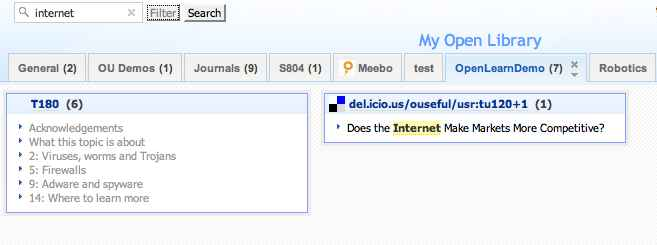
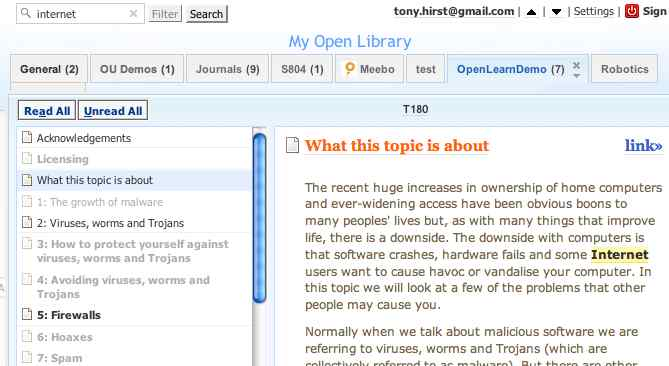
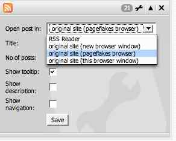
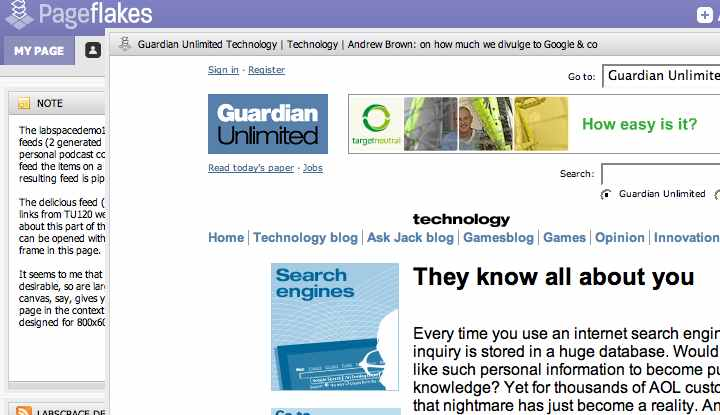
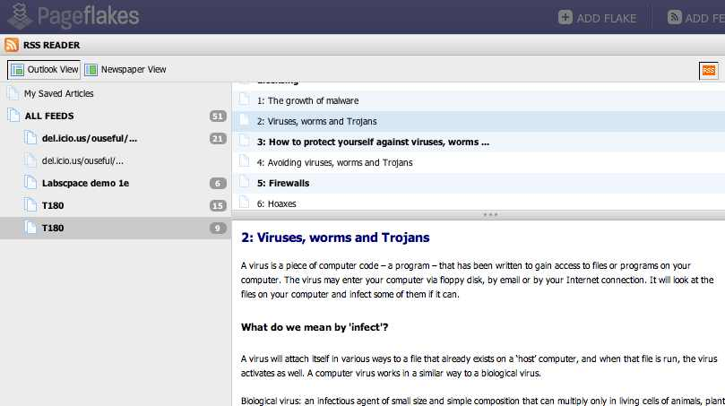
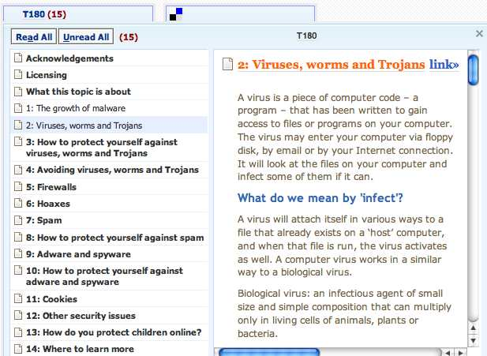

November 22, 2006
Netvibes Search and the Pageflakes Browser
Over the last few week, Netvibes and Pageflakes have both gone up a version and Excite.co.uk has released its own Excite webtop/startpage as a beta ("European grown all the way!!" apparently - which seems to be the way of a lot of this display surfaces?). Paying a visit today to Pageflakes and Nettvibes (seeing how they handle a course content feed derived from an OpenLearn LabSpace course) a couple of new (to me at least) features caught my eye.
Firstly, Netvibes has a search filter that is applied over the feeds coming into a tab (the search is over link text and item description text, I think?):

The filter also highlights the search/filter terms in the feed item description:

In Pageflakes, there is the option of opening links (fin the example I'm using, from a delicious RSS feed) in a floating, pop-up browser within the Pageflakes environment:

I like the feel of this interaction - it's reminiscent of the "Now follow this link" lightbox pattern I doodled with a month or two ago.
Ideally, though, this pop-up embedded/floating browser requires a large screen resolution to allow the pop-up window to render the linked to page sensibly, yet still retain the Pageflakes context:

If you don't use either of these applications regularly, or you use one and not the other, it's worth popping back every so often, I think, to see what new innovations they have come up.
And finally, just to recap on how these services display the OpenLearn course content feed, here are a couple of screenshots.
First, Pageflakes:

And here's the same feed in Netvibes:

If you want to try out the feed, here are a couple of links:
Sample OpenLearn Course Content Feed 


It's also worth checking out the feed directly in Firefox and IE7...
Posted by ajh59 at November 22, 2006 10:16 PM